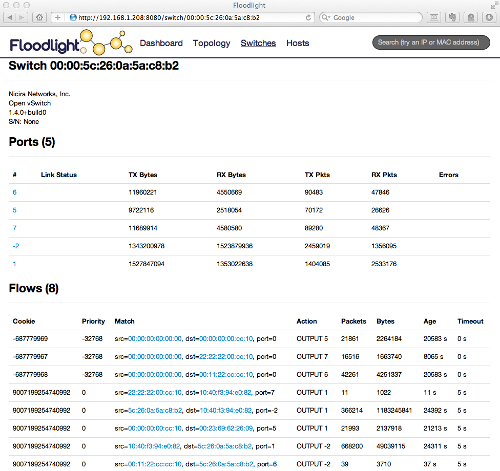

TL;DR – Use Floodlight, keep an eye on OpenDaylight.
There have always been a confusion on which controller to start with for newcomers in the OpenFlow ecosystem. Should one prefer the classic NOX? Or go with a more modern choice like Beacon or its successor Floodlight? What about Ryu, Trema, and a dozen of other controllers in the wild? Ohh! I was just forgetting about OpenDaylight, which is backed by industry giants such as Cisco, Juniper, Brocade, IBM, etc. After all you just want to push a set of simple OpenFlow commands to the forwarding plane and observe the result. On the other hand, you are also concerned with the maturity of the environment that you will work with. Nobody wants to find himself scratching his head for a bug in the controller core. And I am pretty sure you will also question whether there is an ongoing active development and supportive community in the project or not. Lucky for you that I am volunteered to share my two cents on the issue. After two years of fighting in this mud up to my neck, I have something to say!
Let’s get this straight first: This survey investigates the existing free and open-source OpenFlow controllers in the wild from the point of view of a developer. I assume that what you look for is
- clean code base (not a slick GUI or ground-breaking performance),
- versatile core (not ad-hoc solutions like STP to common problems),
- decent set of built-in components (e.g., device/switch query interface, access to topology, links and routing),
- quick deployment cycle (i.e., it should take a few minutes to compile your changes and fire up the controller),
- active development (i.e., presence of developers constantly contributing to the code base),
- supportive community (e.g., once I had a reply to one of my questions in RRD4J mailing lists after 9 months), and
- some documentation (not just a API reference).
NOX
It all began with NOX. While some might argue, NOX is the very first OpenFlow controller that attracted a whole lot of researchers around itself and achieved to have a wide acceptance. A majority of the primary Software-Defined Networking (SDN) and OpenFlow papers and applications are implemented on top of NOX. Even Google experimented (prototyped?) with NOX to build its own distributed OpenFlow controller, called ONIX. That being said, all that fuss was left in 2010. From then on the NOX mailing-lists are almost abandoned and no major changes that I know of is introduced to the code base.
NOX is written in C++ and does not have a reputation for providing a developer-friendly environment. While rumors have that it ships a Python API, almost all the development is getting performed in C++. Another missing feature that I get shocked when I unfortunately figured out after days of debugging is that it does not support topologies with loops. (As a solution one can enable STP, but this approach contradicts with the essence of SDN.) In terms of documentation, it is safe to say that there is almost no documentation. NOX is also shipped with a Python+QT based GUI. (One should note that a decent user interface is maybe the first feature that newcomers look in a controller. While your mileage might vary, I had never been in need of a GUI and a majority of the time you make your way out with Wireshark traces and controller logs, trust me.)

To sum up, NOX had its rise-and-fall. Personally, I would not recommend it to anybody for production and/or development purposes, especially considering the other decent alternatives in the market.
POX
Hereby I confess that I have never programmed in POX before. I will present the following statements depending on my experiences with other controllers and POX activity I observed in the OpenFlow social media.
POX calls itself as the younger sibling of NOX (WTF?). My personal belief is that POX is more or less motivated by the purpose of creating a developer-friendly OpenFlow controller successor to the NOX. Almost all OpenFlow newcomers are directed to either POX, or Floodlight. Hence, it is no surprise that it has a pretty active mailing list. It is written in Python and provides a decent Python API for the Pythonistas out there. Due to Python being an interpreted language, POX really cuts down the time spent in develop-and-deploy cycle, particularly compared to C++ based NOX. Further, in addition to supporting the NOX GUI, POX also provides a web-based GUI.
If Python is your main language of choice, then you are safe to experiment with POX. If you care about maturity and want to deploy your system in production, or the programming language does not matter much for you (that is, either you are a total programming newbie or have the same knowledge level on both Python and Java) I recommend you to evaluate the Java alternatives.
Beacon
When I first started controller programming with NOX, there were no documentation, no consistency in the code base, nothing was compiling or working without manual intervention. Despite the fact that I have some significant experience with C/C++ and Linux, I could not understand what the controller was actually doing behind. Even making the routing module work was a quite painful experience. Then came Beacon. You clone the repository, import the project into Eclipse, and hit the run button. It was all that simple. You have just changed something in the code? Hit the run again and here you go. It even has a getting started tutorial and video on its website and it was working. (It is very rare to see working tutorials in the research world.) Further, it has a forum, where David Erickson, the author of Beacon, himself replies you back promptly. What could a developer want more? But that was not all there. The code was written in a very a simple and expressive style. You just look at the names of the classes, modules, functions and you get the whole picture. You don’t need to be a programming prodigy just to push a simple flow. So you need to get the network topology? See topology module, checked. You need the attachment point of a device, see devicemanager, checked. You need to observe link states, see linkdiscovery, checked. You need a hub, see hub. You need a learning switch, see learningswitch. You need the shortest path between two switches, see routing. It was all falling into place. Finally, there was a controller where you can focus on programming, instead of wasting your time on compilation and library issues. I do not even mention about what a relief it felt was to program in an IDE, instead of using a text editor to modify a gigantic code base you have zero knowledge of. Ahh… And it was the first controller that ships with a built-in web user-interface. (The UI was so superior to the alternatives that I think it is still the best out there – I did not had a chance to test the web UI of OpenDaylight.)
In my humble opinion, David Erickson is the programmer who founded the fundamental software design patterns that are necessary for an SDN controller. His design choices affected all the other controller software out there in the wild written after Beacon and they all used more or less the same patterns. Some might argue that those patterns were obvious and the market would eventually converge to them at some point. But looking back at the controllers before Beacon, it was really a huge step forward and David Erickson is the name behind this leap.
Being written in Java was a game changing feature for Beacon. On the other hand, its dependency to Eclipse (while there were no obvious reasons for that) has always made me sick. Eclipse toolbox helps you to export the controller as a single executable binary, but (due to Eclipse launcher) it requires GTK libraries to run, which is non-sense for a console application. Further, OSGi had its own hard to debug, subtle sensitivities and steep learning curve. (That being said, OSGi helps you to restart the bundles individually, which once I used to provide fault-tolerance in a distributed controller I implemented.) Beacon also could not handle topologies with loops or devices with multiple attachment points, that is, a device reachable by multiple switch ports. And it is disappointing to say that it didn’t have a feature update since years.
To sum up, Beacon provides a compact and expressive code base and works flawlessly. That being said, Eclipse and OSGi dependency really kills me and supporting only star topologies (that is, topologies without loops) is very constraining. If you are about to give Beacon a try, I would recommend you to evaluate Floodlight instead.
Floodlight
When I first heard of BigSwitch Networks announce their fork of Beacon, called Floodlight, I checked out the repository, casted an eye on it for 10 minutes, and concluded that it is almost the same code base. Months passed by, I had bitten many times by gotchas found in Beacon (e.g., topologies with loops, devices appearing in multiple attachment points, etc.) and decided to give Floodlight another try. Good lord! In months Floodlight became the most prolific and feature rich F/OSS controller upto its time. Besides supporting topologies with loops, non-OpenFlow domains, and multiple device attachment points, it even introduced lots of other features that I had never imagined of for a software-defined network. Further, it is built with Apache Ant (Yay! Now I can use IntelliJ IDEA!) that lets you easily export JARs and replaces OSGi with a custom, Java-based, simple module loading system. While these two features would not mean much to Beacon foreigners, this was really something. (The custom module system does provide no stop, restart and reload capabilities, but if they were so inevitable for you, you can easily tailor the existing system to fit your needs.) Floodlight has unquestionably the most active and responsive community among the F/OSS OpenFlow softwares. A majority of the Floodlight developers working in BigSwitch Networks directly participate in the mailing-lists. You can find yourself discussing an issue with the actual developer(s) of a particular module. I have never witnessed neither an unanswered question, nor an unresolved problem. It was truly a supportive and active community. Floodlight exposes almost all of its functionality through a REST API and there exists many handy utilities for common tasks such as static routes and end-to-end route (circuit) pushes. Floodlight has a web-based UI (contributed by Wes Felter) and a Java-based GUI, called Avior, contributed by Jason Parraga. One of its kind, Floodlight can also be run as network backend for OpenStack using a Quantum plug-in. Finally, it is the most documented controller project out there in the ecosystem.


When I look back at the Beacon code base, it was written in a succint and expressive style, which makes it easy to grasp the logic at a single glance. This compactness also comes from the fact that Beacon does not provide as much feature as Floodlight does. On the other hand, Floodlight has so many enhancements and compatibility layers for different kind of hardware and corner cases that the code base is, to put it mildly, polluted and a couple of its components needs a rewrite from scratch. But these are generally concerns from a software architectural point of view and probably does not bother 90% of its users. In addition, while I have never been in need of one, I must admit that Floodlight web-based UI has some serious bugs and neither web-based UI, nor Java-based UI is officially supported by the BigSwitch Networks.
All in all, Floodlight is the most mature OpenFlow F/OSS controller in the market that I know of and my concerns about the code base will probably never be a problem for a majority of its users. It just runs out of the box, has a smooth work flow, supportive community, and works without a glitch for almost all real-world cases. Floodlight is the controller that I would recommend to anybody who wants to write custom control plane applications.
OpenDaylight
OpenDaylight is an industry-supported Linux Foundation project. While I have never used it in practice, in my observations through out the code, I found its code base clearer compared to Floodlight and more or less provides a similar feature set – there are even some OpenDaylight features that are not present in Floodlight. At the beginning stages of the project, board members favored the controller code contributed by Cisco to the Floodlight-based contribution of BigSwitch Networks, which consequently followed by BigSwitch Networks stepping down from the platinium status. When you look at the mailing list activity, you can also easily observe the domination of Cisco developers. Further, OpenDaylight follows a controller model that, in addition to OpenFlow, alternative south-bound protocols can be introduced. This facet significantly differs OpenDaylight from the other controllers and lets you use switches employing non-OpenFlow proprietary control protocols. Much can be said about OpenDaylight, but in my humble opinion it is still in the early development stages. That being said, developers should certainly keep an eye on it.
Feature Matrix
Before concluding the post, here I present a feature matrix for the controllers discussed.
| Feature | NOX | POX | Beacon | Floodlight | OpenDaylight |
|---|---|---|---|---|---|
| Language(s) the controller is written in | C++ | Python | Java | Java | Java |
| Language(s) supported by the controller | C, C++, Python | Python | Java | Java, Python | Java |
| Is actively developed? | N | Y | maintained | Y | Y |
| Has an active community? | N | Y | Y | Y | Y |
| Easy to install? | N | Y | Y | Y | Y |
| Easy to program? | N | Y | Y | Y | Y |
| Is documented? | N | N | Y | Y | some |
| Provides a REST API? | N | N | N | Y | Y |
| Have utility functions? | N | N | N | Y | N |
| Has a UI? | Python+QT4 | Python+QT4, Web | Web | Java, Web | Web |
| Supports hosts with multiple attachment points? | N | N | N | Y | Y |
| Supports topologies with loops? | N | N | N | Y | Y |
| Supports non-OF island connections? | N | N | N | Y | Y |
| Supports OF island connections with loops? | N | N | N | N | Y |
| Supports non-OF south-bound protocols? | N | N | N | N | Y |
| Supports OpenStack Quantum? | N | N | N | Y | Y |
Conclusion
To sum it all together, I find Floodlight the most viable controller in the ecosystem as of now. While other alternatives can be tailored to fit your needs, this or that way as your project nears to finalize, you start to look for stability and being bitten by some odd limitations of the controllers starts to be quite annoying. Considering the huge amount of time that you will devote for learning a controller, try to aim your shot to the best candidate as much as possible. And we will together see how far will OpenDaylight go to in the future.